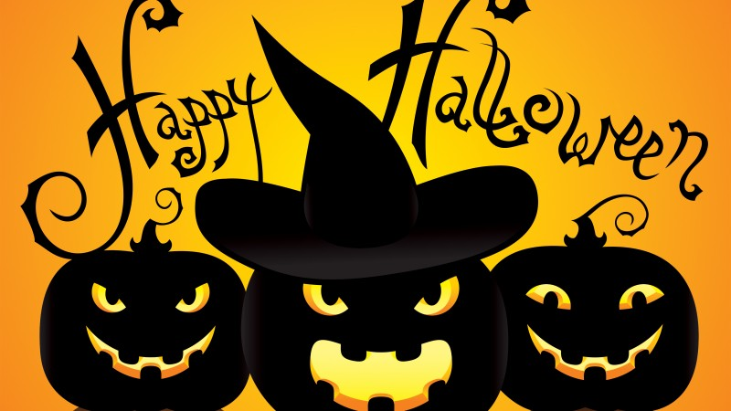

Хэ́ллоуи́н (англ. Halloween, All Hallows' Eve или All Saints' Eve)[6] — современный праздник, восходящий к традициям древних кельтов Ирландии и Шотландии, история которого началась на территории современных Великобритании и Северной Ирландии[6][7][8]. Отмечается 31 октября, в канун Дня всех святых. Хэллоуин традиционно празднуется в англоязычных странах, хотя официальным выходным днём не является. С конца XX века, в ходе процесса глобализации, мода на атрибутику Хэллоуина возникла также в большинстве неанглоязычных стран Европы и в СНГ. Хэллоуин неформально отмечается в некоторых других странах, имеющих тесные культурные связи с США или Великобританией, например, в Японии, Южной Корее, Сингапуре, Австралии и Новой Зеландии, в ряде островных стран Океании.
